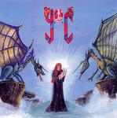

| Artist: | Y.O.C. |
| Title: | Y.O.C. |
| Label: | self produced |
| Length(s): | 48 minutes |
| Year(s) of release: | 2004 |
| Month of review: | [04/2004] |
| 1) | Lost | 4.54 |
| 2) | Satan's Child (Pre Mix) | 4.21 |
| 3) | Seeds Of Hate (Street Version) | 0.23 |
| 4) | Alone (Intro) | 1.22 |
| 5) | @lone | 5.22 |
| 6) | Outro | 0.58 |
| 7) | Satan's Child (No Back Version) | 4.22 |
| 8) | Home Recording - Overkill Years | 8.38 |
| 9) | Satan's Big Version | 4.21 |
| 10) | Lost - Home B. | 3.39 |
| 11) | Satan's Instrumental | 4.23 |
| 12) | Sleepless Night (Alone Acapella Version) | 1.31 |
| 13) | Satan's Full Guitar | 4.24 |
Satan's Child is a memorable song, but this also has to do with the fact that this album alone contains five versions. This first version has demo quality, and a good guitar solo (between Latimer and Malmsteen). The vocal parts are very sparse, almost classical/musical like, the guitar solo is more like what one expects: hard rock. Still, in all, the music is certainly not metal, maybe not even rock. For that it is too slow and atsmopheric. Later, clanging bells set in, and Coskun sings in a more aggressive and emotional fashion. He shows here to have the talent to appeal, but although it may also be due to the rough recordings, his talent needs polishing.
Seeds Of Hate is a warped short vocal track, after which we move into @lone (or is it Alone?). There are only moody keyboards and rather low key vocals here. All in all, the music reminds a bit of later Hammill, with a bit of a dark brooding ambient feel. The vocals on this one intertwine in various styles, often low and dark, but also higher and more melodic. It does continue to be a rather vague affair. The Outro is a classical affair with mainly strings and choral singing.
The second Satan's Child has almost the same feel as the first one, except that a harpsichord and a 'chamber orchestra' feel is added. Is that a real cello there. The main melodies is a striking as ever. Later growling rhythm guitars set in, but beneath the rest not over it. This is certainly progressive, albeit on the lo-fi side. Devil Doll and Jacula are likely comparisons, although the vocals can be quite a bit more outspoken and emotional.
On Home Recording - Overkill Years, which is in fact a home recording, the tearful voice of Coskun sounds like he is singing to you on the phone. Again, a rather slow song, sparsely instrumented and melodic and memorable. Although my fleeting impression of Y.O.C. is that he is a hard rock/prog metal singer, he turns out to be different from and more than that. On this one, the memorable vocal line is sung almost hesitantly, and for the rest the long track features acoustic guitar, although I can very well imagine the song to be played faster and louder.
For Satan's Big Version I have to crank the volume up again. The harpsichord and cello are back for this one. The first part is quite similar to version 2, but this time, the song moves in different directions, with some added melodies, more percussion and church organ and gruff vocals. This is a more varied, but also more restless version. I think I prefer the vocally more monotonous versions, although the church organ is nice.
Lost - Home B. is in fact a very noisy recording of Lost. The vocal melody is fine, but the recording suffers from the quality. Satan's Instrumental is version number four, more like Jacula than the vocal versions are: plenty of church organ, a funeral like atmosphere and good melodic material.
Sleepless Night (Alone Acapella Version) is a short one, sung acapella and a bit in haste. Satan's Full Guitar is the by now well known song with the guitar playing along with the harpsichord. The recording quality is not so great, plenty of noise here too. Then we get the guitar by itself mainly, The Malmsteen influence in the guitar can be felt strongly on this instrumental version.